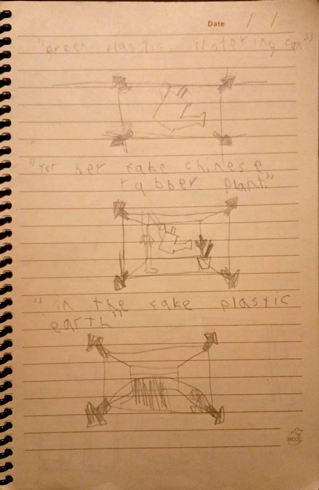

i've had an idea to make a animated music video for radiohead's fake plastic trees since last winter break. I had a concept in my head and made a sketch about it a while ago (seen above). I wanted the entire video to be a slow zoom out as the camera traversed multiple scenes matching each line from the song. I realized that i could actually get started on this and perhaps work on it over the break as a fun project for myself and in order to learn more blender which i've wanted to do for a while. The models here are largely ripped from free sources in order to show a concept for the video. I started work on some models a year ago but i have to finish them. Eventually i will try to use as many of my own models as i can (except maybe for the manequin because it's so well made and easy to work with that i wouldn't know how to recreate it, but i will make my own polystyrene man). I hope to get as much done for it as possible before the start of the next semester with the ultimate goal of uploading it on youtube and perhaps using it in my portfolio.